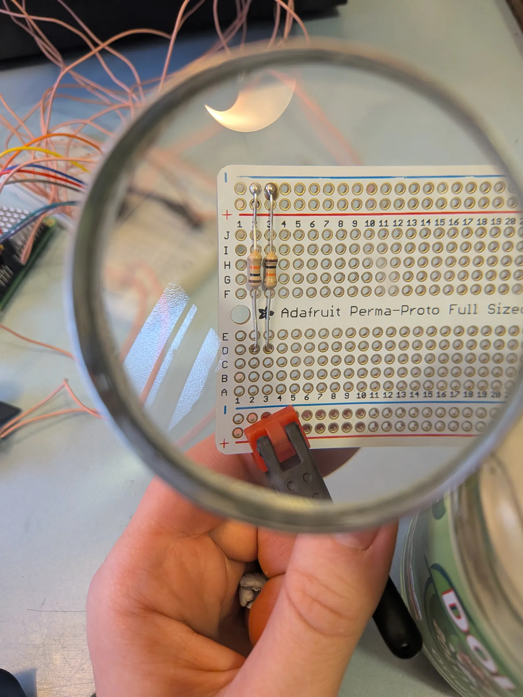
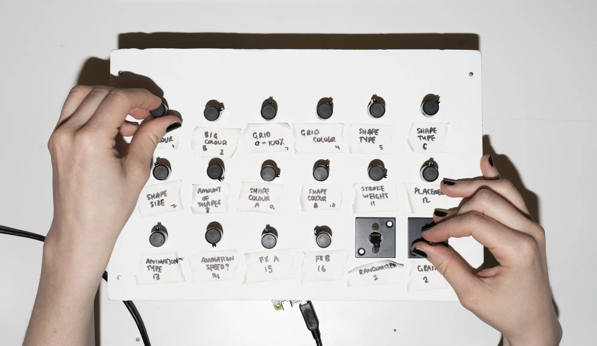
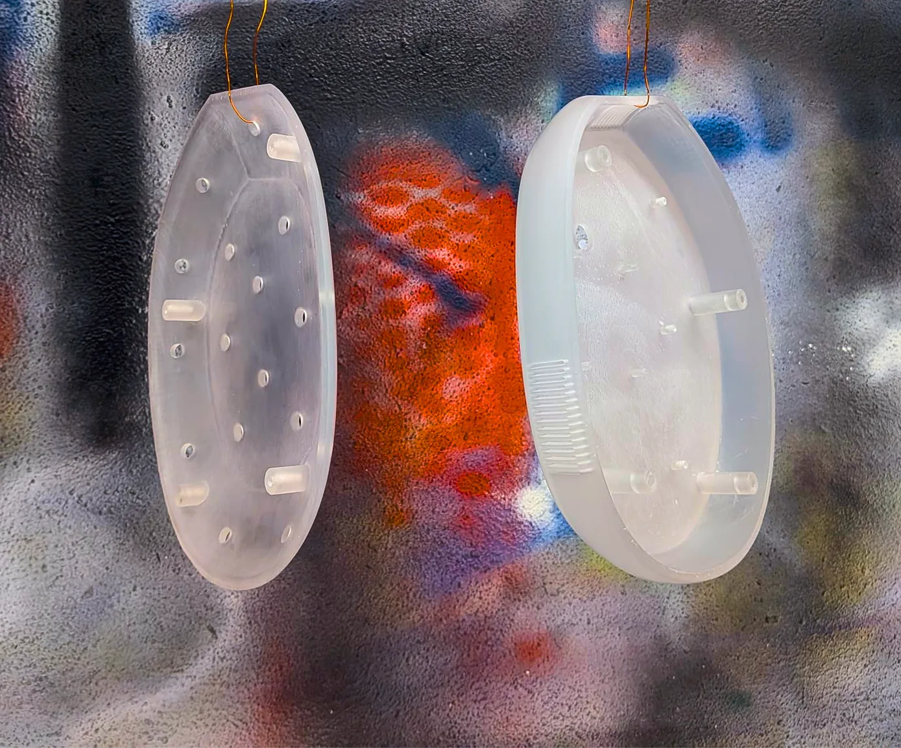
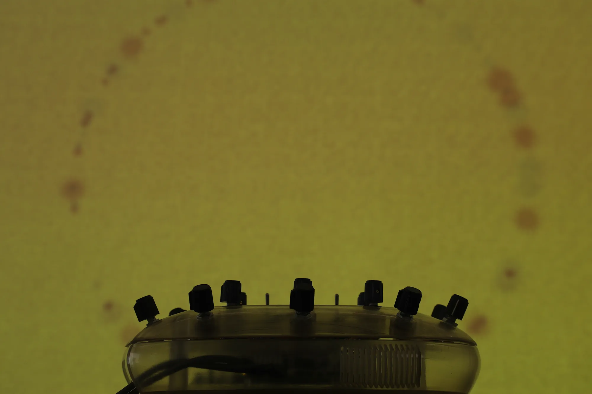
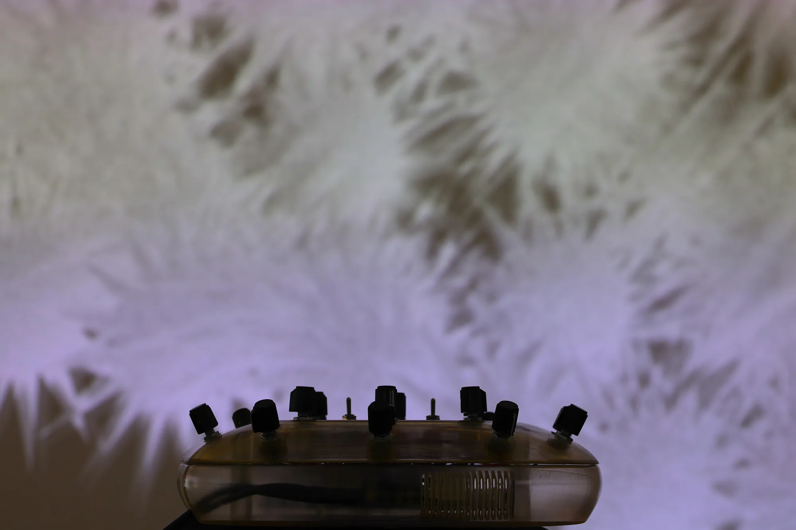
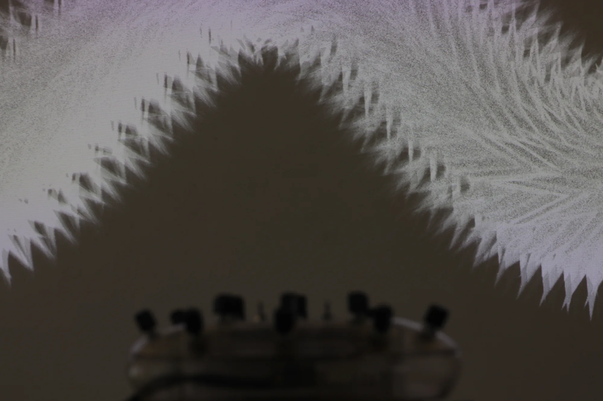
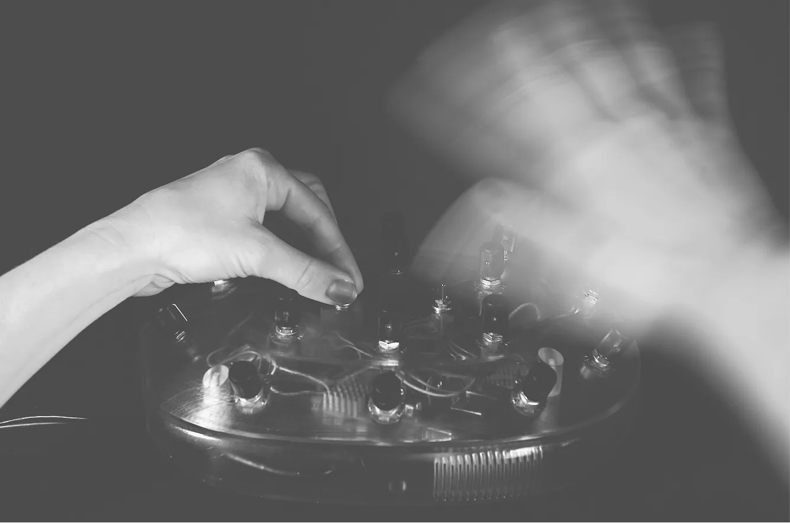
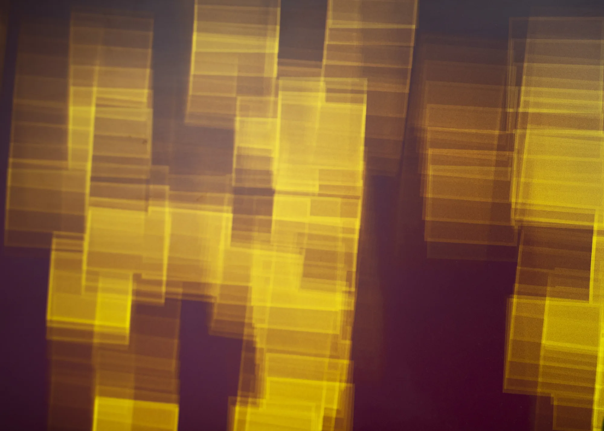

Blackbox VJ Controller: Speculative MA Thesis
This project was the result of my speculative MA thesis, which explored the tension (and distance) between control inputs and creative output with analogue & digital mediums, focusing on chance methods. To achieve this, two visual jockey (VJ) controllers were made: one digital (blackboxvj.me) and a custom 3D-printed controller, enabling co-creation between hardware and real-time visual output.
Ask (self-developed brief)
Develop a system that explores the relationship between digital and analogue input/output through a web-based and physical visual controller, using VJing as a framework for real-time creative interaction and generative output.
Highlight/s
The digital controller was labelled, due to the sheer amount of customization available. A key design decision was to leave the physical controller unlabeled. The intention was to encourage a more intuitive, exploratory form of interaction, where users could "play" rather than rely on explicit instructions.
This shifted the focus away from understanding the system and towards experiencing it directly. It was a decision made when user testing and seeing how people interacted with each type of controller; most people were locked in with the visual output, essentially "vibing" it out with the switches and knobs.
Contribution
- Independently designed and developed the browser-based controller interface for Blackbox, serving as the foundation for the rest of the project
- Connected the frontend system to analogue inputs using Python scripting, enabling real-time communication between hardware components and digital output
- Designed a custom 3D-printed controller enclosure (Fusion 360) inspired by 90s product design, to house the single-board computer and wiring while reinforcing the overall concept
- Shaped both conceptual direction and technical implementation of the thesis project end-to-end
Outcome
The project was exhibited during Oslo Art Weekend at the White Box, where it received a positive reception from visitors. The installation helped draw people in and created moments of curiosity and engagement around the interaction between sound (hooked up an eight hour long ambient playlist), control, and visual output.
Project media
Here are some key artefacts from the project, with captions explaining each of them.







